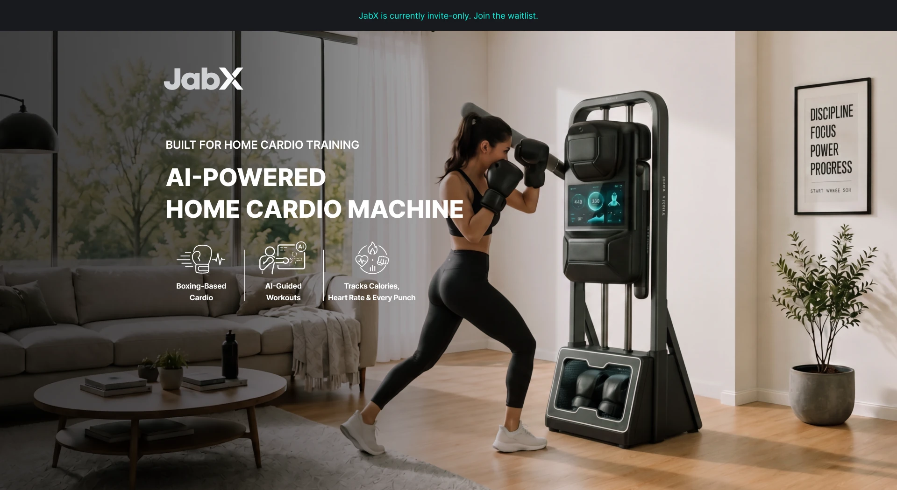
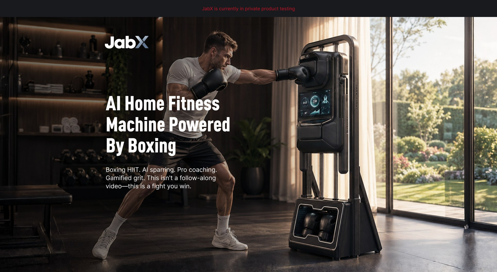
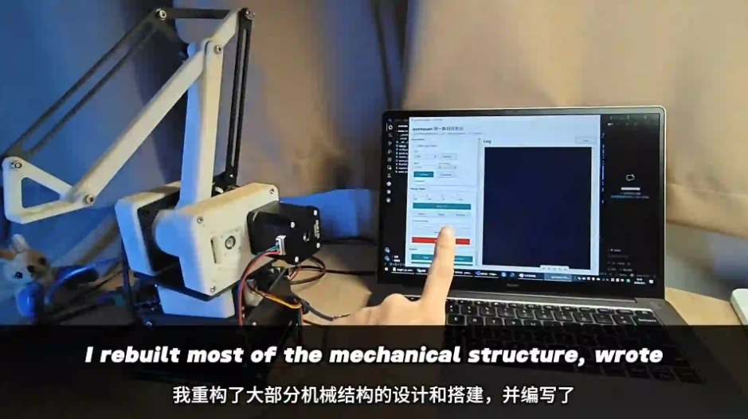

我关注早期硬件产品最不确定的一段：谁会买、为什么买、通过什么渠道触达、怎样转化为真实成交。
过去的工作横跨北美市场前测、用户研究、机器人渠道销售、Amazon 多站点运营和智能硬件打样量产， 因此我既能看用户和转化数据，也理解硬件交付、成本结构和供应链约束。
项目

作为公司首位销售，我从 0 到 1 搭建 AI 格斗机器人商业化流程，覆盖展会获客、客户分层、 报价、代理政策、合同、付款方式、交付边界和售后反馈。累计沉淀约 500 个有效线索， 成交 25 台设备，确认回款约 150 万元，并推动单台报价和毛利率提升。

面向北美家庭健身用户，我用 Meta 广告、KickoffLabs、问卷和访谈测试“拳击有氧设备” “家庭互动健身”“Physical AI Coach”三类表达。项目累计获取 1,202 leads、459 份问卷、 35 位付费意向用户，帮助团队判断 Home 设备版更适合作为近期入口，Robot 概念版适合作为长期方向保留。

在广告前测之外，我继续通过 50+ 场海外用户访谈、Reddit 社区调研、20+ 海外 KOC 建联、 150+ WhatsApp 社群用户和在深外籍人士线下体验，补充真实用户反馈，优化产品表达、触达话术和体验流程， 并沉淀家庭使用场景、拳击有氧接受度和 AI 教练价值相关洞察。
经历
JabX 北美市场前测与用户增长
围绕产品上线前的表达、目标人群和用户证据，拆分市场前测与用户研究两条链路，持续验证北美家庭健身用户对拳击有氧、家庭互动健身和 Physical AI Coach 的接受度。
- 三类市场表达测试
- Meta 冷启动投放
- KickoffLabs
- 问卷与访谈
- WhatsApp 社群
- 线下体验反馈
AI 格斗机器人商业化
作为公司首位销售，把早期具身智能娱乐硬件从低价贴牌假设，推进为自有品牌、直销和渠道并行的成交路径，并搭建线索、报价、合同、交付、售后和供应链反馈闭环。
- 查看 AI 格斗机器人项目
- 渠道销售 0 到 1
- 展会获客
- 客户分层
- ROI Selling
- 合同体系
- 售后与供应链反馈
科研成果转化项目市场 0 到 1
负责科研成果转化项目的市场冷启动，用通俗内容解释科研产品价值，并开拓养老机构、中医诊所等合作渠道，推动“店中店”试点。
- 查看科研项目
- 内容冷启动
- 小红书与公众号
- 私域社群
- 渠道开拓
- 店中店试点
魔术机器人产品经理
主导儿童教育娱乐魔术机器人立项和产品定义，整合魔术师、教育机构和学校资源，搭建 13 人团队并完成香港学校测试，验证 2B2C 模式可行性。
- 深圳科创学院官网
- 产品定义
- 国际化团队管理
- 教育娱乐场景
- 资源整合
- 香港学校测试
- 2B2C 验证
亚马逊运营：美国 / 德国 / 沙特
负责 Amazon 美国站、德国站日常运营，并从 0 到 1 搭建沙特站账号。通过 Listing 优化、广告投放、库存管理、本土化表达和评价修复，推动新品从 0 到 BSR、老品销量和毛利提升。
- 查看 3C 产品
- Amazon 多站点运营
- Listing 优化
- 广告转化
- 库存预测
- 评价修复
- 大促 SOP
智能冰热敷按摩护膝联合创始人
负责柔性穿戴结构从 0 到 1 研发，推进 ID、样机、CMF、车缝工艺和工厂 SOP，推动产品完成小批量打样到 500 台量产爬坡，并参与融资路演材料梳理。
- 查看运动恢复护膝
- 柔性结构研发
- 供应链调研
- 样机打样
- CMF
- 工厂 SOP
- 量产爬坡
内容与工程实践

公众号 yuan-y00
机器人与出海方法沉淀
记录机器人、智能硬件出海、渠道销售和用户研究相关观察，也会把项目中跑过的方法整理成 SOP。

小红书 yuan
德语内容与用户反馈
持续更新德语学习内容，练习选题、表达拆解、内容发布和用户反馈迭代。

工程项目
三自由度机械臂
我重做了机械臂的大部分机械结构，编写控制程序并完成软硬件调试。视频用英文记录了设计、搭建和排查问题的过程。
技能
增长与验证
商业化与运营
产品与硬件
语言与工具
小工具
PMF 访谈
品牌调研
联系
GitHub：yuan-y002426941529@qq.com · 19356010751